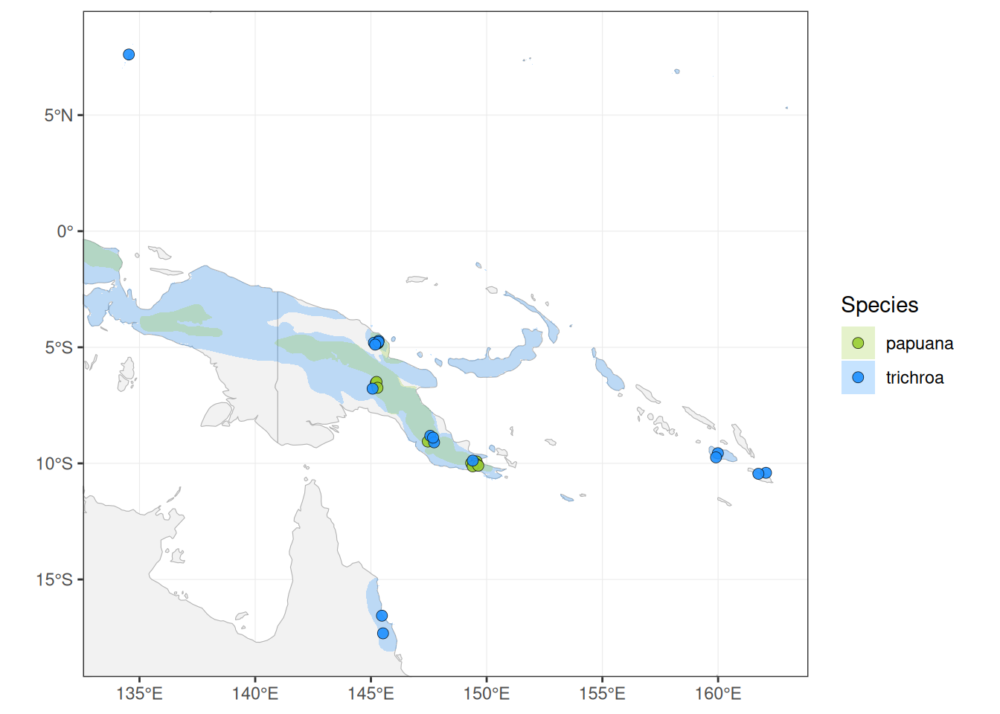
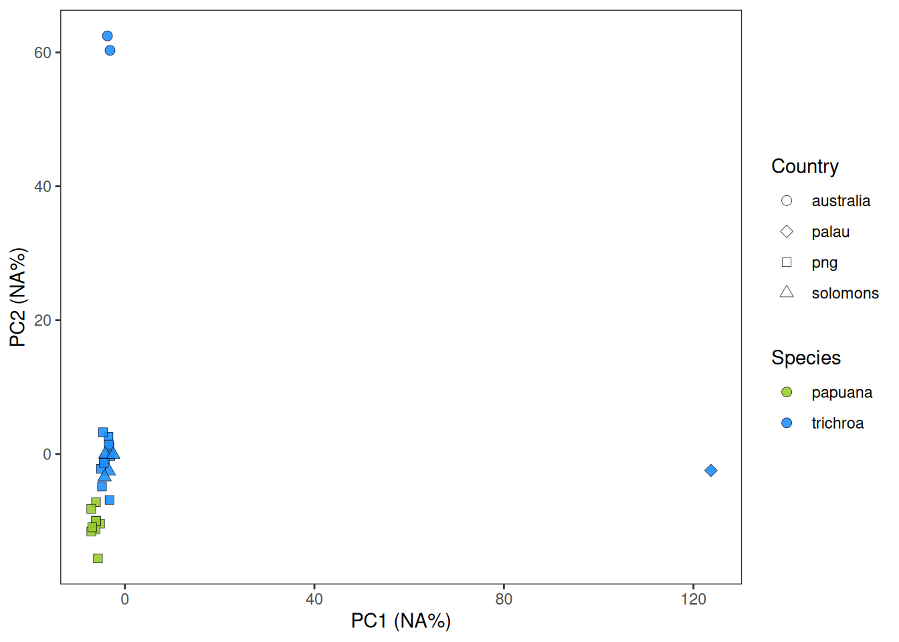
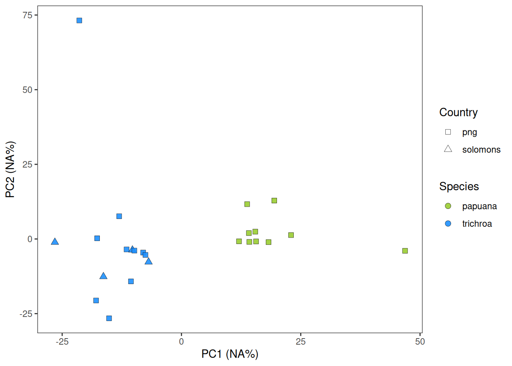
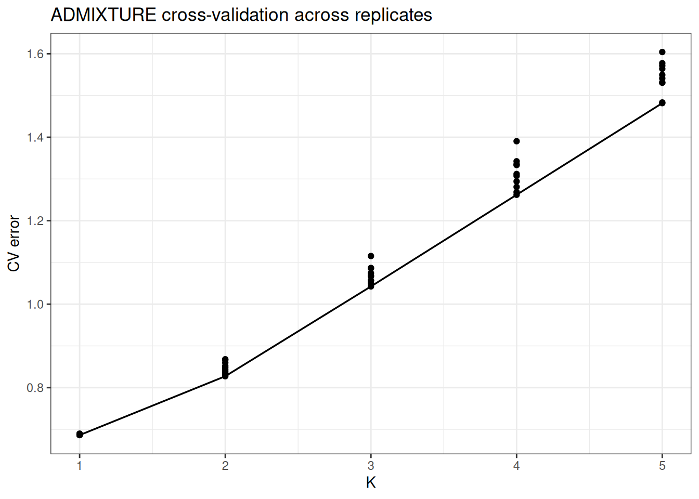
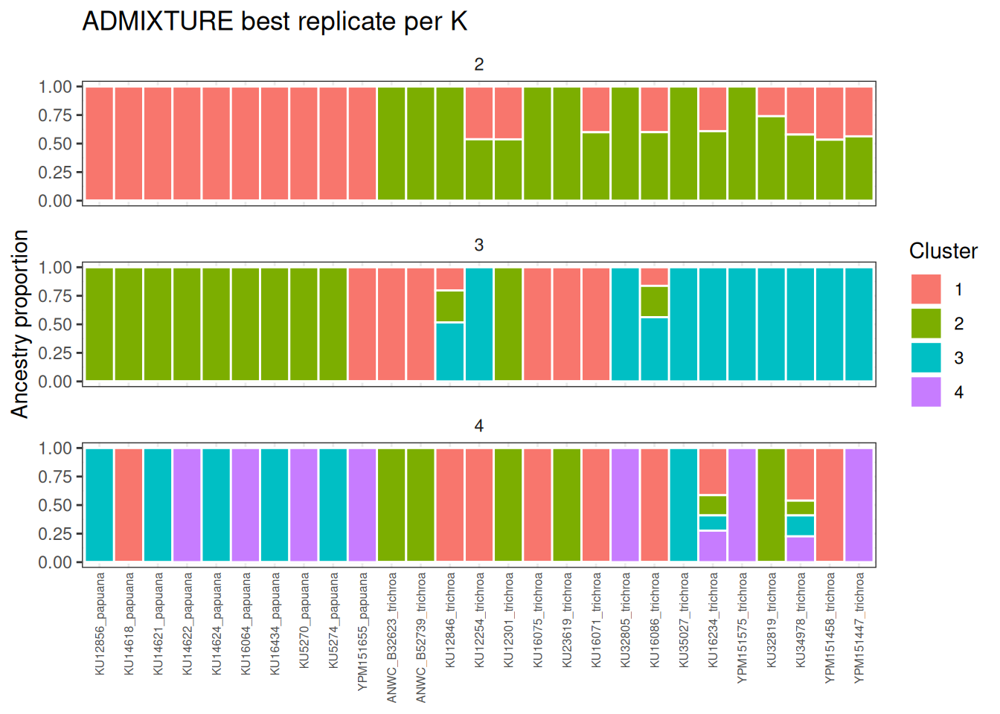
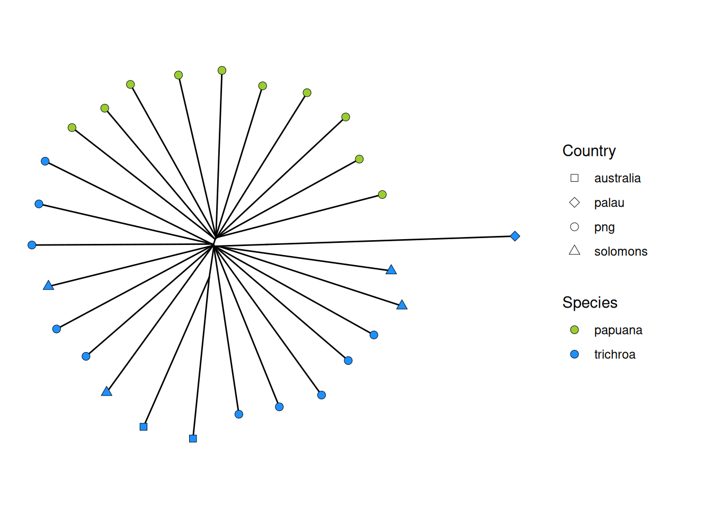
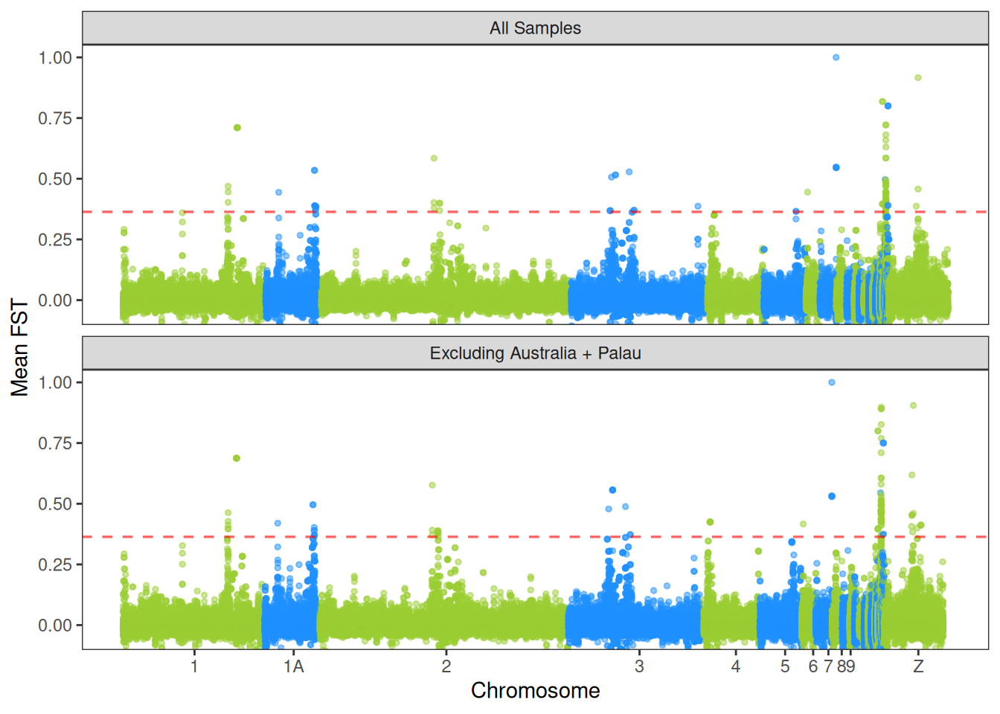
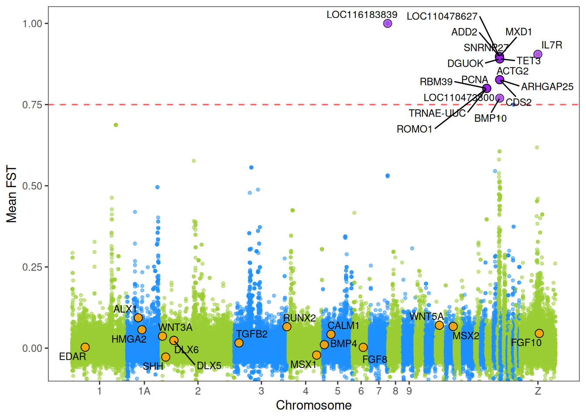
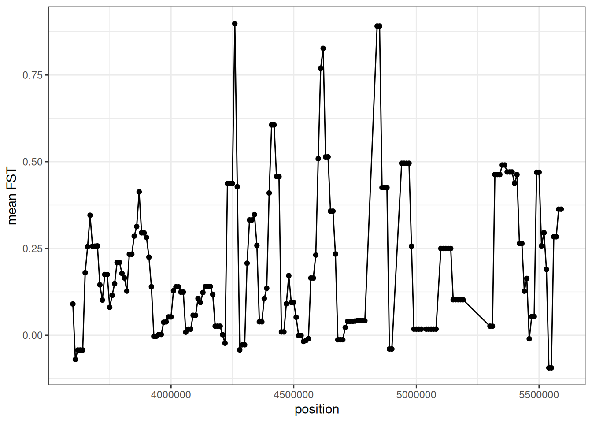
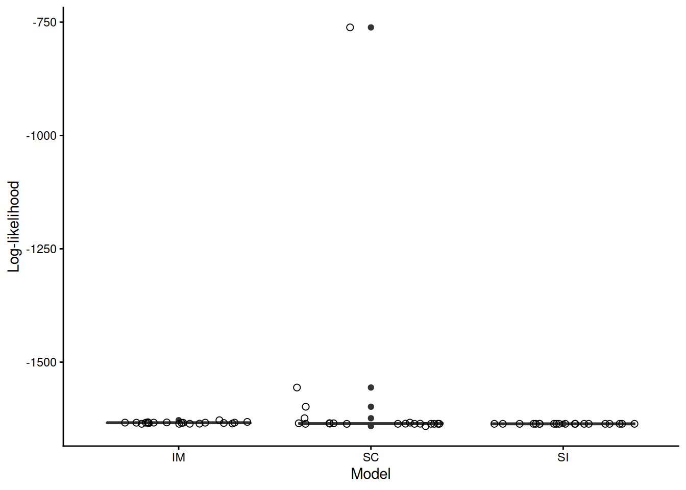

library(ggplot2)
library(tidyverse)
library(sf)
library(maps)
library(ggtree)
library(clusterProfiler)
library(org.Gg.eg.db)
library(AnnotationDbi)Species limits and divergence in New Guinea Erythrura
In the New Guinea Highlands, Blue-faced Parrotfinch Erythrura trichroa and Papuan Parrotfinch Erythrura papuana are broadly sympatric and / or syntopic. In the hand, E. papuana is larger, and has a more massive, bulbous bill, potentially linked to its diet (speculatively heavy on figs as opposed to bamboo seeds). However, plumage does not vary between the two, and both are rarely seen in the wild—E. papuana particularly. The possibility that their description as separate species based on morphological variaiton in specimens was in error and New Guinea parrotfinches are best described as ecotypes of a single taxon led Devon DeRaad, Lucas DeCicco, Brett Benz, and Rob Moyle to assess genetic divergence using first mitochondrial DNA and then genome-wide SNPs from a RADseq library preparation. Neither dataset proved sufficient to disentangle the two. They then generated moderate (~9x) whole genome sequencing data, which I aligned to the Lonchura striata genome and ran through the snpArcher variant calling pipeline to produce filtered .vcf files. Data quality were good, with no outliers in depth of coverage or percentage of reads mapping to L. stricta. This notebook addresses the following questions:
- Are E. trichroa and E. papuana distinguishable with WGS data?
- If so, is divergence concentrated in a handful of regions of the genome?
- Does shared genomic variation reflect recent divergence, hybridization, or divergence with gene flow?
It requires these libraries:
We begin by loading metadata and plotting sampling localities over Birdlife International’s approximation of the range of the two species:

Note the outliers here: one E. trichroa in Palau (reputedly with a large bill), and another two from Queensland, Australia. We next plot the first two principle components of a PCA run on 101399 SNPs, randomly sampled from a window size set by snpArcher to effectively LD-prune the data set:

E. trichroa in Australia and Palau drive the observed variation, though New Guinea papuana and trichroa are distinguishable. Let’s re-run PCA and plot only those samples:

Evidence of distinct clusters, with Solomons and PNG trichroa showing no geographic substructure.
Next we will look at the results of model-based clustering and ancestry assignment via admixture. I ran 10 replicates of K1-5. Here is a plot of cross-validation error, showing K1 is the best fit, followed by K2:

Here are the assignments for K2-4. Note that K2 pulls apart species with some admixture from papuana intro trichroa (but not vice-versa). The other values are geographically insensible:

A last way to visualize subtle differentiation is with a neighbor-joining tree. Here is one built from Nei’s genetic distance (D), rooted at the midpoint, and ladderized:

An obvious next step is to look at how divergence between species is distributed across the genome. We will do so using the vcftools to calculating sliding window \(F_{ST}\) on same ~100K SNPs (50K window size, 10K step size). We ran the analysis twice: once on all samples, and once on only samples from New Guinea. Here are Manhattan plots of the results:

Not a big difference, surprisingly. It seems like PCA exaggerates the differentiation of the three outlier samples—or perhaps that their influence on allele frequencies and thus \(F_{ST}\) is minor.
We now want to know whether these regions correspond with genes related to craniofacial development, and if not, what the outliers actually are. As it turns out, none of them are standard bill size variants (e.g., BMP4; others coded in orange):

A gene ontology enrichment analysis using Gallus gallus orthologs finds no special clusters:
# outlier go
candidate_genes <- fst_out_chr %>%
filter(MEAN_FST >= thr, genes != ".", !is.na(genes)) %>%
separate_rows(genes, sep = ",") %>%
mutate(genes = str_trim(genes)) %>%
distinct(genes) %>%
pull(genes)
# filter genes to db
all_genes <- fst_out_chr %>%
filter(genes != ".", !is.na(genes)) %>%
separate_rows(genes, sep = ",") %>%
mutate(genes = str_trim(genes)) %>%
distinct(genes) %>%
pull(genes)
# enrich!
ego <- enrichGO(
gene = candidate_genes,
universe = all_genes,
OrgDb = org.Gg.eg.db,
keyType = "SYMBOL",
ont = "BP",
pAdjustMethod = "BH"
)
ego#
# over-representation test
#
#...@organism Gallus gallus
#...@ontology BP
#...@keytype SYMBOL
#...@gene chr [1:19] "LOC116183839" "LOC110473800" "RBM39" "TRNAE-UUC" "ROMO1" ...
#...pvalues adjusted by 'BH' with cutoff <0.05
#...0 enriched terms found
#...Citation
S Xu, E Hu, Y Cai, Z Xie, X Luo, L Zhan, W Tang, Q Wang, B Liu, R Wang, W Xie, T Wu, L Xie, G Yu. Using clusterProfiler to characterize multiomics data. Nature Protocols. 2024, 19(11):3292-3320 BMP10 is possibly the most significant candidate related to morphology:
# grep for families
special_genes <- grep("BMP|WNT|FGF|SHH|HOX|DLX|MSX|RUNX", candidate_genes, value = TRUE)
special_hits <- fst_out_chr %>%
filter(!is.na(genes), genes != ".") %>%
separate_rows(genes, sep=",") %>%
mutate(genes = str_trim(genes)) %>%
filter(genes %in% special_genes)
# check chr clustering
special_hits %>%
dplyr::select(gene=genes, CHROM, chr, BIN_START, BIN_END, MEAN_FST) %>%
arrange(CHROM, BIN_START)# A tibble: 5 × 6
gene CHROM chr BIN_START BIN_END MEAN_FST
<chr> <chr> <fct> <int> <int> <dbl>
1 BMP10 NC_042587.1 22 4570001 4620000 0.165
2 BMP10 NC_042587.1 22 4580001 4630000 0.165
3 BMP10 NC_042587.1 22 4590001 4640000 0.231
4 BMP10 NC_042587.1 22 4600001 4650000 0.509
5 BMP10 NC_042587.1 22 4610001 4660000 0.770Let’s look at the peak. It appears to be multiple divergent windows, though this could be a scaling issue:

What are the other outlier genes, then? One could come up with a story…
clean_genes <- candidate_genes[!grepl("^LOC|^TRNA", candidate_genes)]
desc <- AnnotationDbi::select(
org.Gg.eg.db,
keys = clean_genes,
keytype = "SYMBOL",
columns = c("SYMBOL","GENENAME")
)
desc SYMBOL GENENAME
1 RBM39 <NA>
2 ROMO1 reactive oxygen species modulator 1
3 ADD2 adducin 2
4 MXD1 MAX dimerization protein 1
5 SNRNP27 small nuclear ribonucleoprotein U4/U6.U5 subunit 27
6 ARHGAP25 Rho GTPase activating protein 25
7 BMP10 bone morphogenetic protein 10
8 CDS2 CDP-diacylglycerol synthase (phosphatidate cytidylyltransferase) 2
9 PCNA proliferating cell nuclear antigen
10 ACTG2 actin, gamma 2, smooth muscle, enteric
11 DGUOK deoxyguanosine kinase
12 TET3 tet methylcytosine dioxygenase 3
13 SRCIN1 SRC kinase signaling inhibitor 1
14 EPOP <NA>
15 IL7R interleukin 7 receptorOur final preliminary question is whether trichroa and erythrura are similar due to recent divergence and shared ancestry, secondary contact and hybridization, or divergence with gene flow. We fit demographic models in dadi2, ran optimization replicates, and estimated parameter uncertainty via bootstrapping. An IM model is a better fit than either SC or SI (“strict isolation”), though note the spread across replicates:

The best run is an SC run by AIC and log-likelihood:
best_aic <- mod_df[which.min(mod_df$AIC),]
best_ll <- mod_df[which.max(mod_df$ll_model),]
best_aic# A tibble: 1 × 3
model AIC ll_model
<chr> <dbl> <dbl>
1 SC 1537. -762.best_ll# A tibble: 1 × 3
model AIC ll_model
<chr> <dbl> <dbl>
1 SC 1537. -762.Here are the parameter estimates for that run:
params <- read_tsv("/home/k14m234/erythrura/scripts/dadi/sc_ci.tsv", col_names = FALSE)
colnames(params) <- c("rep", "ll_model", "name", "est", "se_i", "lo", "hi")
best_rep <- params[which.max(params$ll_model),]$rep
best_params <- params %>% filter(rep==best_rep)
best_params# A tibble: 6 × 7
rep ll_model name est se_i lo hi
<chr> <chr> <chr> <chr> <chr> <chr> <chr>
1 8 -761.5987507750375 nu1 1.1689624911833516 5.459557774274… 1.16… 1.16…
2 8 -761.5987507750375 nu2 1.1254787432318751 2.214667587799… 1.12… 1.12…
3 8 -761.5987507750375 T1 0.20887261531882914 2.817877586312… 0.20… 0.20…
4 8 -761.5987507750375 T2 1.1838391971968723 5.020025648577… 1.18… 1.18…
5 8 -761.5987507750375 m12 0.04428878095505888 5.043343917950… 0.04… 0.04…
6 8 -761.5987507750375 m21 0.03366046106153659 1.070161612278… 0.03… 0.03…We can convert these to “real units” with an estimated mutation rate, sequence coverage, and generation time:
# A tibble: 6 × 6
name real_unit real_est real_low real_high real_est_years
<chr> <chr> <dbl> <dbl> <dbl> <dbl>
1 nu1 individuals 2294. 2294. 2.29e+3 NA
2 nu2 individuals 2208. 2208. 2.21e+3 NA
3 T1 generations/years 820. 820. 8.20e+2 820.
4 T2 generations/years 4645. 4645. 4.65e+3 4645.
5 m12 per_generation 0.0000113 0.0000113 1.13e-5 NA
6 m21 per_generation 0.00000858 0.00000858 8.58e-6 NA Not particularly realistic! Or these things are real young. Will need to keep optimizing.